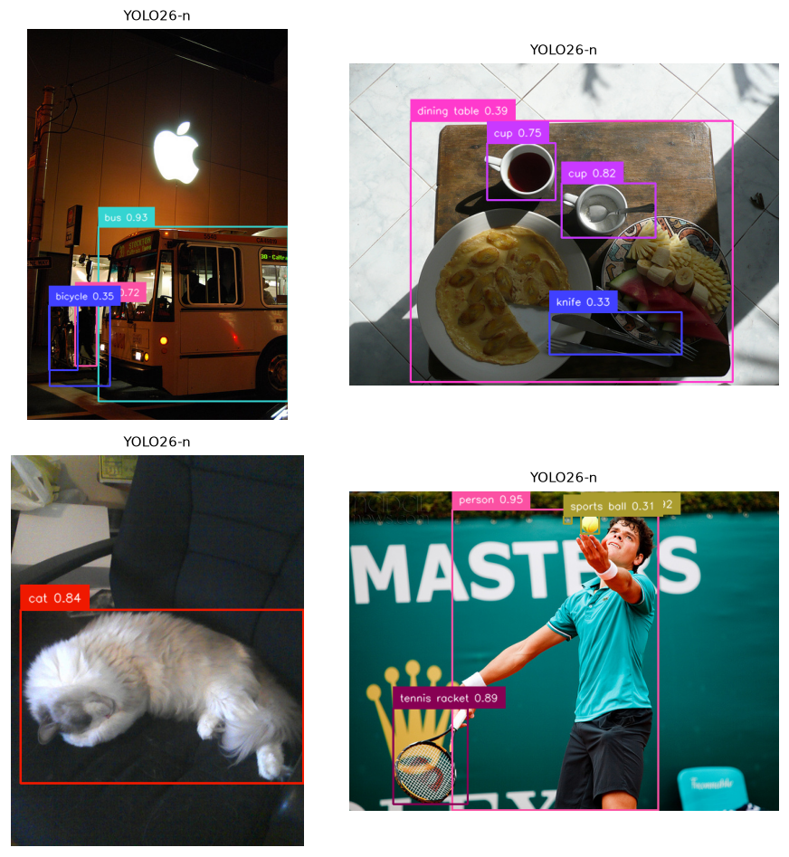
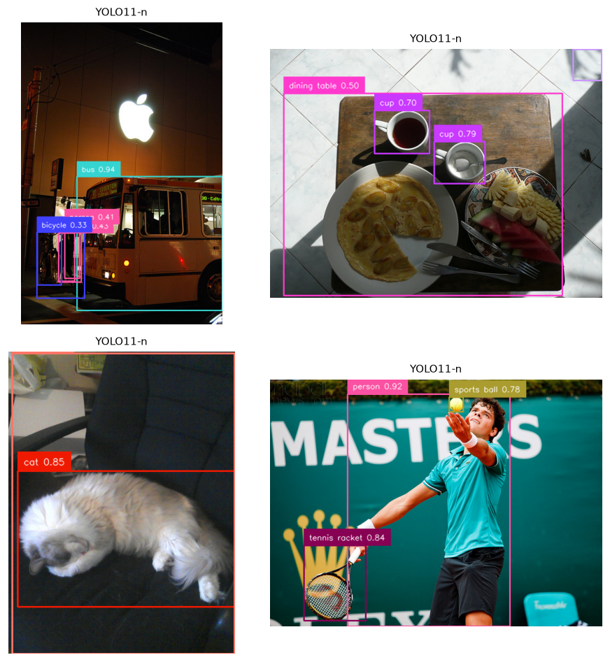
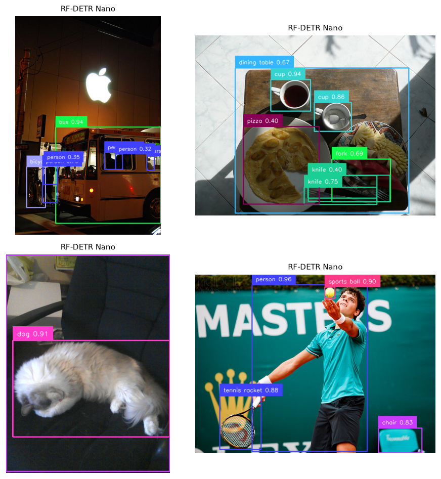
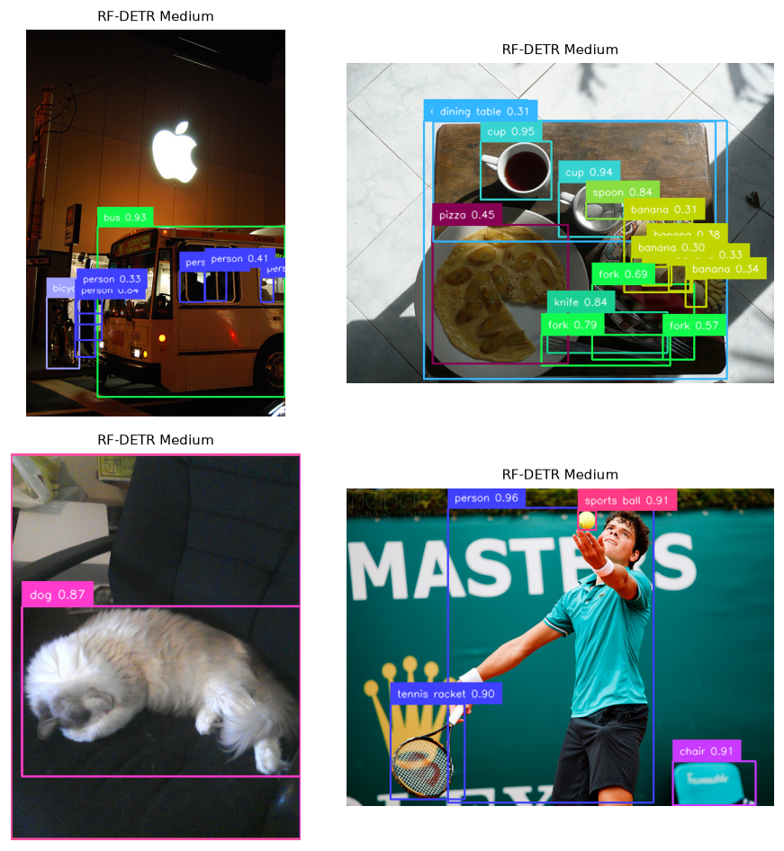
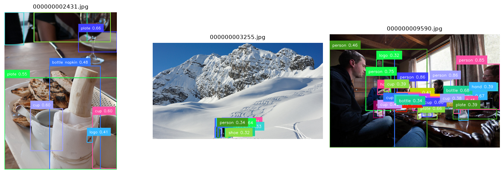

01 · Object detection
What is in the image, and where? — benchmarking YOLO vs RF-DETR on COCO val2017
The task
Object detection answers two questions at once: what objects are present and where they are, as axis-aligned bounding boxes with class labels and confidence scores. It sits between classification (one label for the whole image) and segmentation (a label for every pixel), and it underpins most real-world perception — including the robotics work this repo’s hardware also serves.
The headline metric is mean Average Precision (mAP): for each class you sweep a confidence threshold to trace a precision–recall curve, take the area under it (Average Precision), and average across classes. COCO reports mAP averaged over ten IoU thresholds from 0.50 to 0.95 (written mAP@[.50:.95]), which rewards tight boxes, not just roughly-right ones.
Two paradigms
The most important idea to carry across this whole curriculum is the split between closed-set and open-vocabulary detection:
- Closed-set models (YOLO, RF-DETR here) predict from a fixed label set — the 80 COCO classes. Fast, accurate, benchmarkable, but blind to anything off-list.
- Open-vocabulary models (Grounding DINO, YOLO-World) take text at inference time and detect whatever you name — “a forklift”, “a person wearing hi-vis” — with no retraining. More flexible, generally slower and lower-AP on the fixed COCO set.
This report benchmarks the closed-set models head-to-head (they share the COCO label space, so mAP is a fair comparison), then demonstrates the open-vocabulary alternative qualitatively below — it isn’t restricted to the 80 COCO names, so a like-for-like mAP wouldn’t be meaningful.
The architectures benchmarked
| Family | Member(s) | How it localises | Notable trait |
|---|---|---|---|
| YOLO | YOLO26-n, YOLO11-n | Dense grid of predictions over a CNN/feature pyramid | YOLO26 is NMS-free — it learns to emit one box per object, removing the non-maximum-suppression post-step that older YOLOs need |
| RF-DETR | Nano, Medium | A transformer decoder with a fixed set of learned “object queries”, each attending to the image | DETR-style; no anchors, no NMS by design; built on a DINOv2 backbone |
The interesting contrast: YOLO descends from dense, anchor-based CNN detectors that were engineered to suppress duplicates; DETR-family models reframe detection as set prediction and learn to avoid duplicates end-to-end. YOLO26 narrows that gap by going NMS-free too.
How we measured
Rigour notes, so the numbers mean something:
- Data: a fixed 200-image slice of COCO val2017 (downloaded via the FiftyOne zoo). Ground-truth
iscrowdregions are excluded, matching COCO’s ignore policy. - mAP: computed with
torchmetrics(pycocotools-equivalent) at IoU=.50:.95. Inference is run at a near-zero confidence threshold (~0.001) so the full precision–recall curve is captured — thresholding higher silently understates mAP. - Class identity is matched by name across models, because YOLO uses COCO ids 0–79 while RF-DETR uses the original 1–90 ids; comparing raw ids would be wrong.
- Latency: mean of 30 warmed-up, single-image
predict()calls on the local RTX 3090 Ti — end-to-end (pre-process → forward → post-process), i.e. the latency you’d actually feel, not just the GPU kernel time.
Results
COCO detection benchmark
| Model | Family | License | mAP | mAP@50 | mAP@75 | mAP (small) | Latency (ms) | FPS |
|---|---|---|---|---|---|---|---|---|
| RF-DETR Medium | DETR (transformer) | Apache-2.0 | 59.4 | 78.2 | 63.7 | 31.6 | 36.3 | 27.5 |
| RF-DETR Nano | DETR (transformer) | Apache-2.0 | 51.3 | 69.9 | 54.2 | 22.4 | 36.43 | 27.5 |
| YOLO26-n | YOLO (NMS-free) | AGPL-3.0 | 43.0 | 58.1 | 47.2 | 20.1 | 18.75 | 53.3 |
| YOLO11-n | YOLO (anchor-free) | AGPL-3.0 | 37.6 | 52.1 | 40.5 | 17.9 | 18.0 | 55.6 |
Evaluated on 200 COCO val2017 images; mAP via pycocotools-equivalent torchmetrics at IoU=.50:.95. Latency = mean over 30 warmed-up single-image forwards on NVIDIA GeForce RTX 3090 Ti | 24.0 GB | sm_86 | torch 2.11.0+cu128 / CUDA 12.8.
- Accuracy vs speed is a Pareto frontier, not a ranking. RF-DETR Medium tops accuracy (59.4 mAP) at ~27 fps; YOLO26-n gives up ~16 points of mAP (43.0) to nearly double the throughput (53 fps). Neither is “best” — they sit at different points on the curve.
- A new generation earns its number. YOLO26-n beats prior-gen YOLO11-n by +5.4 mAP (43.0 vs 37.6) at essentially the same speed — and does it NMS-free.
- At batch = 1, big models can be latency-free. RF-DETR Medium and Nano measured ~36 ms either way: single-image inference is dominated by fixed pre/post-process overhead, so Medium buys +8.1 mAP for ~no extra latency. (This flips with batching, where the heavier backbone’s compute dominates.)
mAP (small)is everyone’s weak spot, and the relative gap is widest there: 31.6 vs 17.9 between best and worst — a ~1.8× spread, larger than the overall-mAP spread.- License is a real axis. The most accurate model here (RF-DETR, Apache-2.0) is also the permissive one; the fastest (YOLO, AGPL-3.0) carries copyleft terms that matter the moment this leaves a learning context.
Qualitative results
The same COCO images, as each model sees them (boxes shown above a 0.30 confidence threshold for legibility):




Open-vocabulary in action
The four models above can only ever emit one of the 80 COCO names. Grounding DINO removes that ceiling: you hand it a sentence of phrases at inference time and it localises whatever it can find — no retraining, no fixed label set.
Run on the same kind of images with the prompt person. bottle. cup. plate. napkin. logo. shoe. hand., it returns not just the COCO classes but plate, napkin, logo, shoe, hand — concepts that don’t exist in COCO’s vocabulary at all:

Open-vocabulary buys flexibility at a price: Grounding DINO is slower than the YOLO/RF-DETR detectors, and you can’t quote a single COCO mAP for it (its label space is unbounded). The practical pattern is to use an open-vocab model to find or auto-label novel classes, then distil a fast closed-set detector for deployment — a thread later modules pick up.
Where detectors fail
Worth looking for in the figures above and your own images:
- Small & crowded objects — distant people, stacked items; the
mAP (small)column quantifies this. - Domain shift — COCO is everyday photos; performance drops on aerial, medical, industrial, or robot-camera imagery the models never trained on.
- Class confusion — semantically close categories (couch vs chair, truck vs car).
- Confidence calibration — a high score is not a guarantee; thresholds must be tuned per deployment.
Reproduce
uv sync --group data --group detection
uv run python scripts/fetch_data.py coco --max-samples 200
uv run python modules/01-object-detection/run.py \
--models yolo26n,yolo11n,rfdetr-nano,rfdetr-mediumThe engine writes results/metrics.md, results/metrics.json, and the annotated figures embedded above; this page simply includes them.